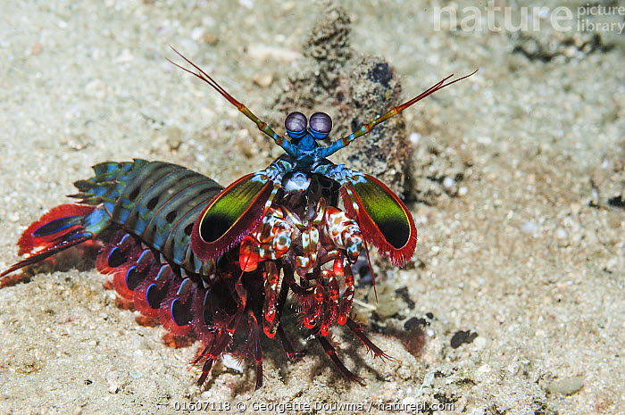
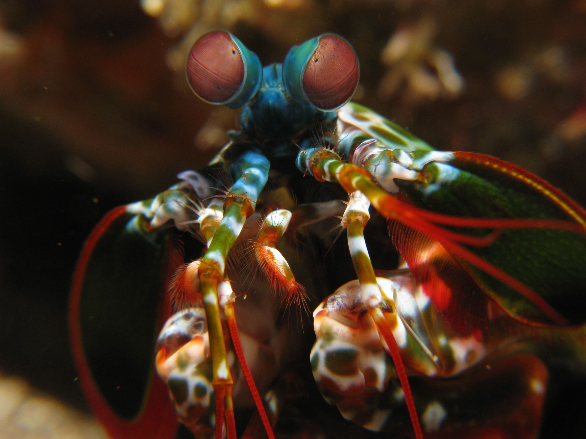
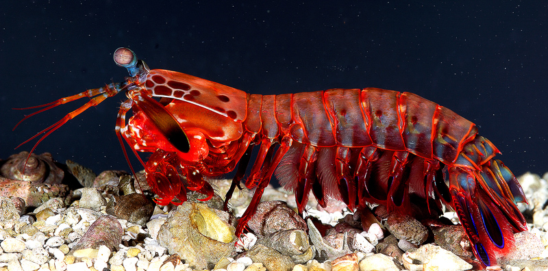

Fatos sobre o Stomatopoda
Onde ele se encaixa?
Informações gerais, o stomatopoda tem como nome cientifico Odontodactylus scyllarus, ele pertence ao reino animalia, filo crustacea, classe malacostraca, subclasse hoplocarida e ordem stomatopoda.
Visão
O stomatopoda possui caracteristica incriveis, uma delas é o especto de cores que são capazes de enxergar. Os seres humanos captam apenas 3 tipos, verde, azul e vermelho, por conta disso podemos enxergar todo espectro possivel de combinações entre essas cores. Ja o stomatopoda possui captam 16 tipos, sendo para os humanos impossivel sequer conceber o que tanto um animal como este enxerga, nosso cerebro simplesmente não foi feito para processar esse tipo de informação.
Ataque
Mas não para por ai, talvez esse seja uns dos animais mais mortais existentes. Ele possui dois ferrões na parte da frente de seu corpo que podem se movimentar na mesma velocidade que um disparo de um rifle de calibre 22. Uma simples comparação, se humanos fossem capazes de acelerar seus braços a 1/10 dessa velocidade, seria possivel colocar uma bola de baseball em orbita. O movimento é tão veloz que causa um deslocamento extremamente agressivo de agua, subindo muito sua temperatura e emitindo luz, o que é conhecido como sonoluminescência, isso permite que a vitima possa ser morta mesmo sem ser diretamente atingida pelo golpe.
Referências Bibliográficas
Aqui você encontra alguns links que podem te ajudar em sua pesquisa!